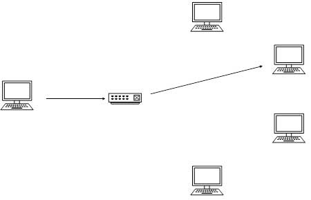
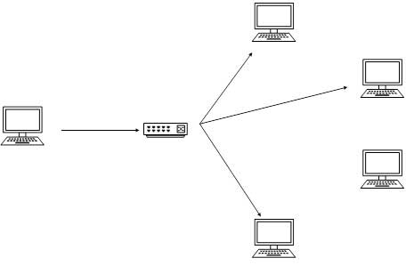
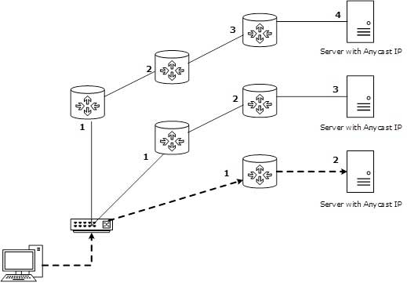

IPv6 Tutorial - Addressing Mode
In computer networking, addressing mode refers to the mechanism of hosting an address on the network. IPv6 offers several types of modes by which a single host can be addressed. More than one host can be addressed at once or the host at the closest distance can be addressed.
Unicast
In unicast mode of addressing, an IPv6 interface (host) is uniquely identified in a network segment. The IPv6 packet contains both source and destination IP addresses. A host interface is equipped with an IP address which is unique in that network segment.When a network switch or a router receives a unicast IP packet, destined to a single host, it sends out one of its outgoing interface which connects to that particular host.

Multicast
The IPv6 multicast mode is same as that of IPv4. The packet destined to multiple hosts is sent on a special multicast address. All the hosts interested in that multicast information, need to join that multicast group first. All the interfaces that joined the group receive the multicast packet and process it, while other hosts not interested in multicast packets ignore the multicast information.

Anycast
IPv6 has introduced a new type of addressing, which is called Anycast addressing. In this addressing mode, multiple interfaces (hosts) are assigned same Anycast IP address. When a host wishes to communicate with a host equipped with an Anycast IP address, it sends a Unicast message. With the help of complex routing mechanism, that Unicast message is delivered to the host closest to the Sender in terms of Routing cost.

Let’s take an example of TutorialPoints.com Web Servers, located in all continents. Assume that all the Web Servers are assigned a single IPv6 Anycast IP Address. Now when a user from Europe wants to reach TutorialsPoint.com the DNS points to the server that is physically located in Europe itself. If a user from India tries to reach Tutorialspoint.com, the DNS will then point to the Web Server physically located in Asia. Nearest or Closest terms are used in terms of Routing Cost.
In the above picture, when a client computer tries to reach a server, the request is forwarded to the server with the lowest Routing Cost.